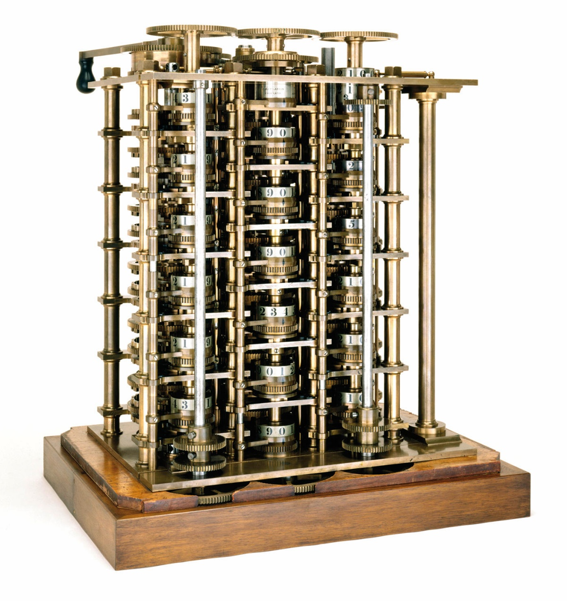

Računalništvo ima dolgo zgodovino, ki sega več tisoč let v preteklost. Že v starem Egiptu in Mezopotamiji so uporabljali preproste pripomočke za računanje, kot je abakus. Razvoj mehanskih naprav za računanje pa se je začel v 17. stoletju s Pascalovo računalo in Leibnizovim kalkulatorjem.
V 19. stoletju je Charles Babbage zasnoval prvi mehanski računalnik - analitični stroj, ki je bil predhodnik sodobnih računalnikov. Stroj je vseboval enote za shranjevanje podatkov, obdelavo in izpis rezultatov, vendar nikoli ni bil v celoti izdelan.
Začetek 20. stoletja je prinesel velik napredek na področju elektronike. Prvi programabilni elektronski računalniki so se pojavili med drugo svetovno vojno.
Med pomembne računalnike iz tega obdobja sodijo:

Razvoj mikroprocesorjev in polprevodniških čipov v 70. letih 20. stoletja je omogočil razvoj osebnih računalnikov (PC). Leta 1981 je IBM predstavil svoj prvi osebni računalnik, ki je postavil temelje za današnje računalnike.
Internet se je začel razvijati v 60. letih kot ARPANET, vendar je postal dostopen širši javnosti šele v 90. letih. Razvoj digitalnih tehnologij je prinesel:
Računalništvo se nenehno razvija. Med ključne tehnologije prihodnosti sodijo: